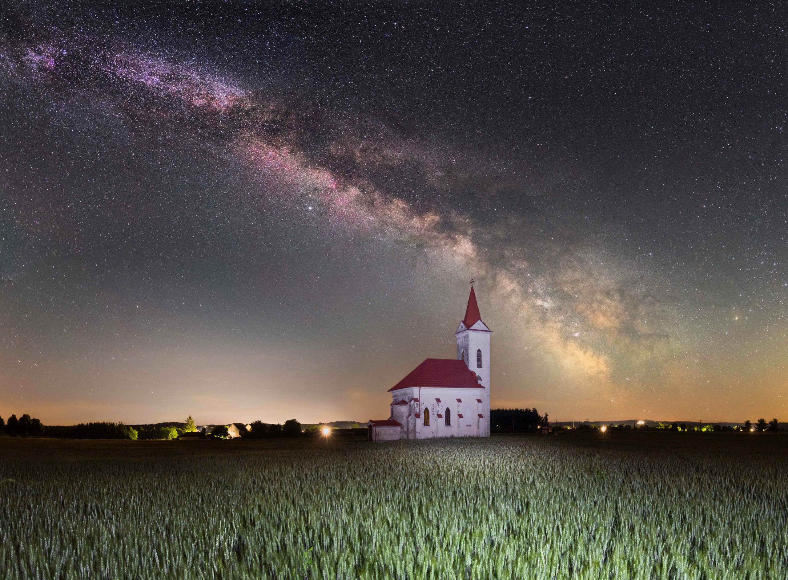

Sas-köd
Tejút
A Tejútrendszernek a Földről látható része a Tejút. Ez lényegében egy halvány, felhőszerű sáv, amely az egész éjszakai égbolton áthúzódik, és onnan figyelhető jól meg, ahol tiszta a levegő, kicsi a páratartalom és a fényszennyezés. Azért tűnik számunkra sávnak, mert galaxisunk korong alakú.
A csillagok és gázfelhők a galaxisközépponttól vett távolságtól lényegében függetlenül 220 km/s sebességgel keringenek. A távolságfüggetlen rotációs sebesség ellentmond a Kepler-törvényeknek és azt jelzi, hogy a Tejútrendszer tömegének nagy része nem ad le és nem is nyel el elektromágneses sugárzást. Ezt a tömeget "sötét anyagnak" nevezik.
A Tejút fényét az azt alkotó csillagok adják. A Tejutat nem csak fényes csillagok alkotják, megfigyelhető anyagának körülbelül 5 tömegszázaléka csillagközi anyag (por és gáz).

Tejút